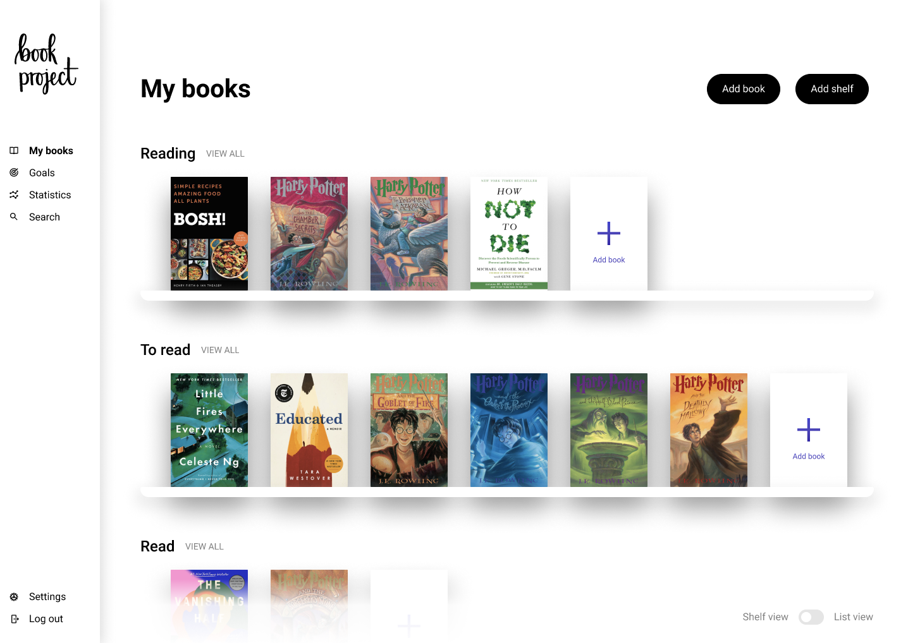

Home
Welcome to the documentation site for Project Books!
Book Project

The Book Project is currently a book tracker. This allows readers to track books they would like to read, are currently reading, have read or did not finish. We're looking to expand the Book Project to become a book platform for readers where they can interact with other readers to find the next good book to read.
We're using Java with Spring Boot, React with TypeScript, MySQL and other technologies to build this.

We started the Book Project out of a desire for a substantially better Goodreads, but we're also looking to redefine the experience at every step. For more information, see our vision for the Book Project and our FAQs.
Books API
The Books API is a GraphQL API that stores books, authors, publishers and more.
It is written in Java using Spring Boot and the DGS framework.
The Books API is a sibling and supporting project to the Book Project. However, it has also been designed to be standalone. Curating and maintaining a large and high-quality selection of books is hard. We hope that by providing a good, easy-to-use API, others who also consume our API may want to contribute back by adding books to our collection.